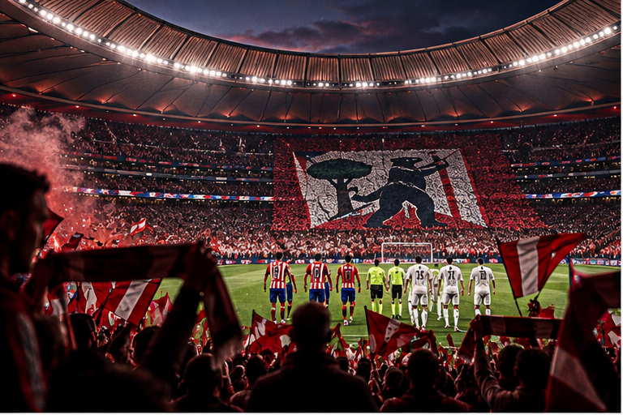
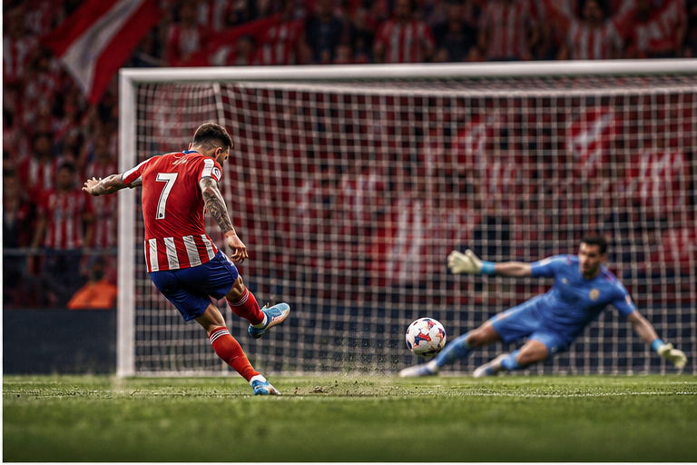
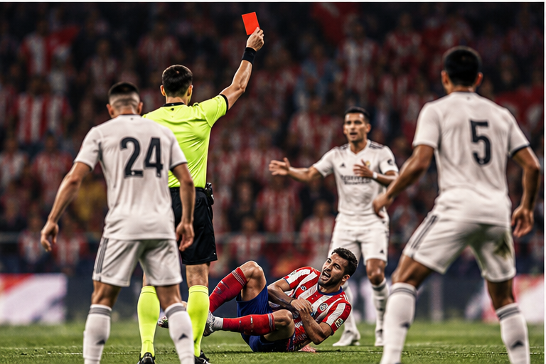
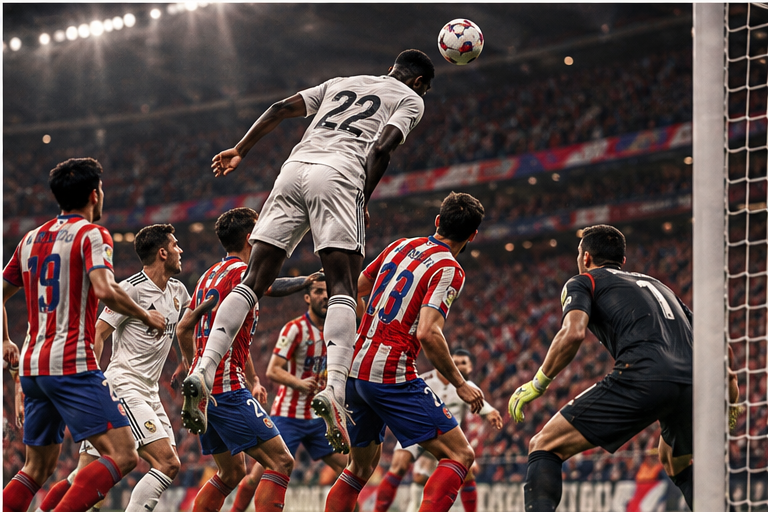

Hay partidos que valen tres puntos.
Y hay partidos que, aunque la clasificación diga lo contrario, parecen valer mucho más.
Un derbi madrileño pertenece a la segunda categoría.
No importa que sea septiembre. No importa que todavía quede prácticamente toda la temporada por delante. Cuando Atlético de Madrid y Real Madrid se encuentran, la tabla pasa a segundo plano durante noventa minutos.
Está el orgullo.
Está la rivalidad.
Está Madrid dividido en dos.
Y, sobre todo, está esa sensación de que cada balón dividido, cada entrada y cada error pesa el doble.
El Metropolitano lo recordó desde el primer minuto.
Fue un partido intenso, físico, incómodo y emocionalmente cargado, exactamente como suele exigir un derbi.
Y esta vez el Atlético terminó llevándose todo.
Un partido que se rompió en cinco minutos
La primera mitad fue de máxima tensión. Ninguno de los dos equipos consiguió imponer completamente su juego y cada acercamiento parecía tener una carga adicional por lo que había en juego.
El Madrid tuvo una de sus ocasiones más claras en el minuto 40, cuando Arda Güler probó desde fuera del área y obligó a Oblak a intervenir.

Pero el verdadero punto de inflexión llegó después del descanso.
Minuto 52.
Huijsen derribó a Giuliano Simeone dentro del área.
Penalti.
Y roja.
El partido acababa de cambiar.
Un minuto después, Alejandro Grimaldo convirtió desde los once metros.
ATLÉTICO 1-0 REAL MADRID.

Con un jugador más y el estadio completamente encendido, el Atlético aprovechó el momento.
En el 59', Jonathan David recibió el balón de Giuliano Simeone y puso el segundo.
2-0.
El Madrid tenía que hacer algo que ya de por sí resulta complicado: reaccionar en un derbi, fuera de casa y con diez jugadores.
Y aun así, no dejó de intentarlo.
Courtois sostuvo al equipo cuando el partido amenazaba con escaparse definitivamente.

Y cuando parecía que ya no quedaba tiempo…
Minuto 89.
Antonio Rüdiger apareció.
Cabezazo.
Gol.
2-1.

Por unos instantes, el Metropolitano volvió a contener la respiración.
Porque eso también son los derbis.
Un partido puede parecer terminado durante 88 minutos y, de repente, una jugada puede devolverle vida.
El Madrid buscó el empate en los últimos instantes, pero el Atlético resistió.
El pitido final confirmó la victoria rojiblanca.
53' Grimaldo (p) · 59' Jonathan David · 89' Rüdiger
Más que tres puntos
El Atlético no solamente ganó un partido de Liga.
Ganó un derbi.
Y en una rivalidad como esta, eso tiene un peso propio.
El Real Madrid se marcha con la derrota y con 15 puntos después de siete jornadas, mientras el Atlético alcanza los 16.
Pero probablemente lo que más duela en Chamartín no sea la diferencia de un punto.
Sea haber perdido precisamente este partido.
Porque los derbis dejan memoria.
Y este dejó una noche intensa, una expulsión, dos goles rojiblancos, un último intento madridista y un Metropolitano celebrando hasta el final.